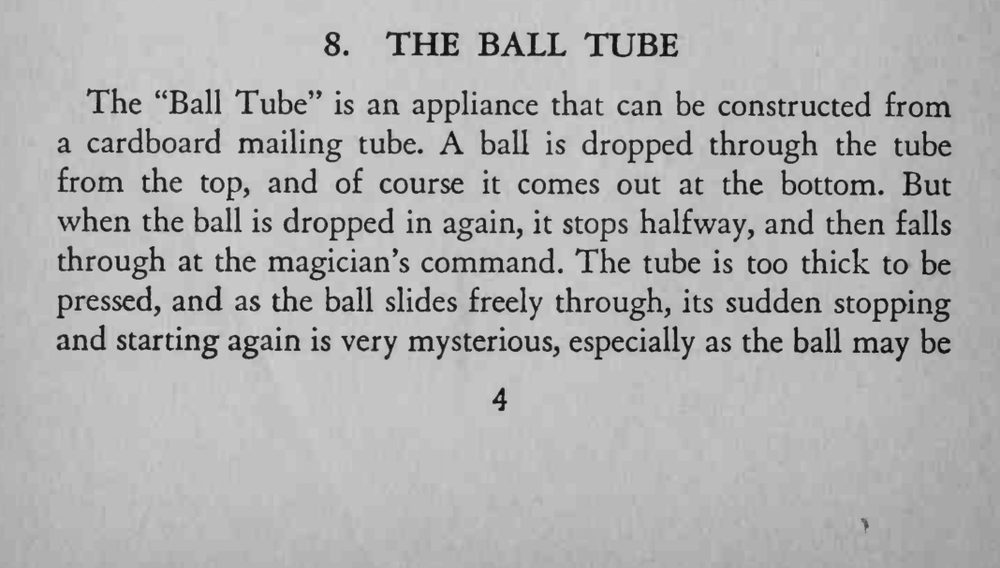
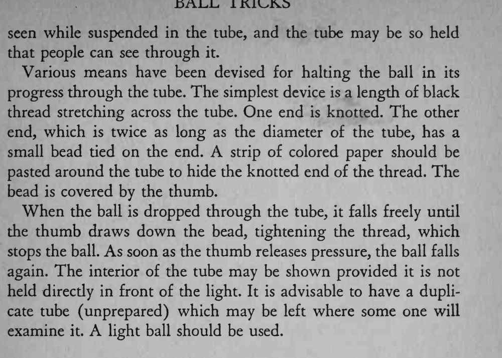

球从筒顶落进去，正常从底部掉出来；再放一次，球却停在筒的半腰，听到命令才继续落下。
要用轻的球，拇指松线时要干脆，球才会应声而落。


The "Ball Tube" is an appliance that can be constructed from a cardboard mailing tube. ball is dropped through the tube from the top, and of course it comes out at the bottom. But when the ball is dropped in again, it stops halfway, and then falls through at the magician's command. The tube is too thick to be pressed, and as the ball slides freely through, its sudden stopping and starting again is very mysterious, especially as the ball may be seen while suspended in the tube, and the tube may be so held that people can see through it. Various means have been devised for halting the ball in its progress through the tube. The simplest device is a length of black thread stretching across the tube. One end is knotted. The other end, which is twice as long as the diameter of the tube, has a small bead tied on the end. A strip of colored paper should be pasted around the tube to hide the knotted end of the thread. The bead is covered by the thumb. When the ball is dropped through the tube, it falls freely until the thumb draws down the bead, tightening the thread, which stops the ball. As soon as the thumb releases pressure, the ball falls again. The interior of the tube may be shown provided it is not held direcdy in front of the light. It is advisable to have a duplicate tube (unprepared) which may be left where some one will examine it. light ball should be used.